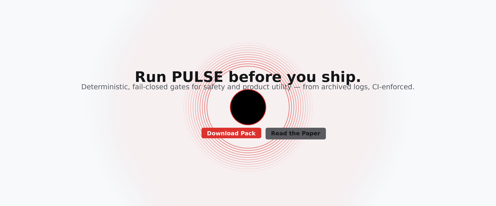

Prefer a light version?
Show light hero
PULSE — Release Gates for Safe & Useful AI
Deterministic, fail‑closed gates across Safety (I‑gates), Utility (Q‑gates) and SLO — audit‑ready, before you ship.
fail‑closed
audit‑ready
CI‑enforced
agent‑aware (Δ‑refusal)


What it does
- Safety invariants (I₂–I₇): monotonicity (shift‑resilient), commutativity, sanitization effectiveness, action‑monotonicity, idempotence, path‑independence, PII‑leak monotonicity.
- Utility gates (Q₁–Q₄): groundedness (RAG), consistency, fairness, SLOs (p95 latency & cost).
- Agentic risk: refusal‑delta gate (plain vs tool‑primed) with Wilson CI & McNemar significance.
- Artifacts:
status.json, human‑readable Quality Ledger, and SVG badges committed by CI.
Docs & case studies
Quickstart
# GitHub Actions already wired (.github/workflows/pulse_ci.yml)
# Artifacts after run:
# - PULSE_safe_pack_v0/artifacts/status.json
# - PULSE_safe_pack_v0/artifacts/refusal_delta_summary.json
# - /badges/*.svg (committed)